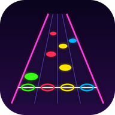

NEON RIFF
Feed it a song. Hit the notes.
Approximate (manual BPM)
Web pages can't read YouTube's audio, so notes here are a steady pattern built from the BPM and first-beat offset you set; they won't follow the actual riffs. For charts generated from the real music, use Audio file mode (far more accurate).
Play the video above and tap along on the beat (8+ taps). Tapping while it plays also sets the first-beat offset.
In-game: ← / → nudge sync by 10 ms.
Difficulty
Settings
Positive offset = you hear audio late (Bluetooth headphones need +150 to +250 ms).
Keys: DFJKL · Space overdrive · Esc/P pause · Phones: tap the lanes